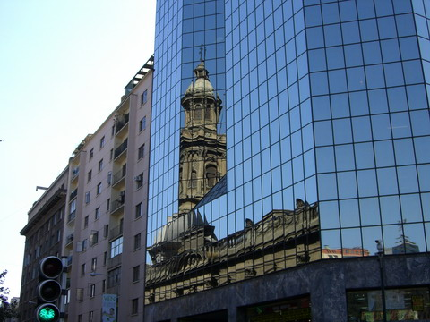
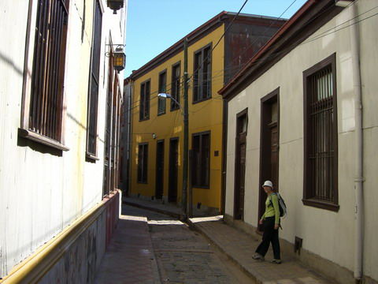
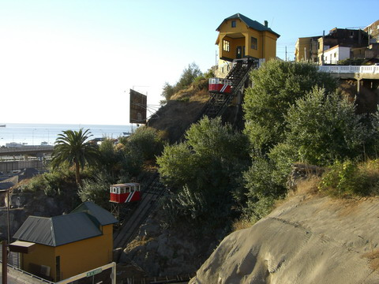
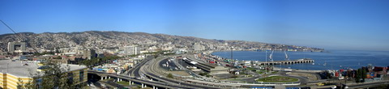
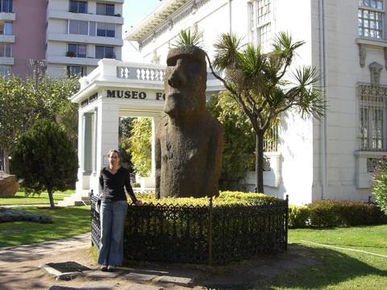
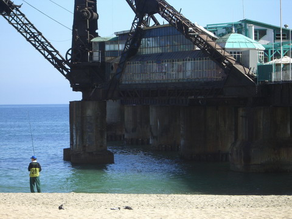
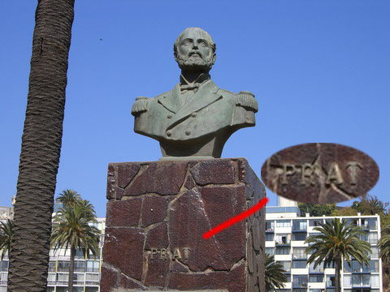
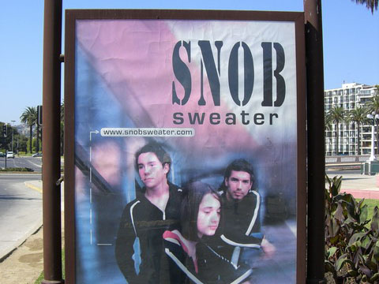

chile
 the city of santiago is a like a lot of south america cities, quite a mix of old and new. we didn't actually do much in santiago, spent a few days wandering around but wanted to go out to the ocean
 about a 100km away is the coast and the old coast side city of valparaiso. here's ren wandering the small streets near the old area of cerro conception.
valparaiso is famous for it's "ascendors"; short funicular railways that take people up and down the steeps slopes of town.
and here's valparaiso from the top of the ascendor in the last shot. they have what looks like a nice coastline but it's all port and not open to public.
the town of vina del mar is next to valpariso and has one of the few easter island statues outside of easter island!
vina del mar does has public access to the beach, but they don't do much with it.
lots of statues near the coastline. here's someone important but shame about the name...
and speaking of unfortunate names; who thought this would be a good name?! snob sweater?! you're fired!